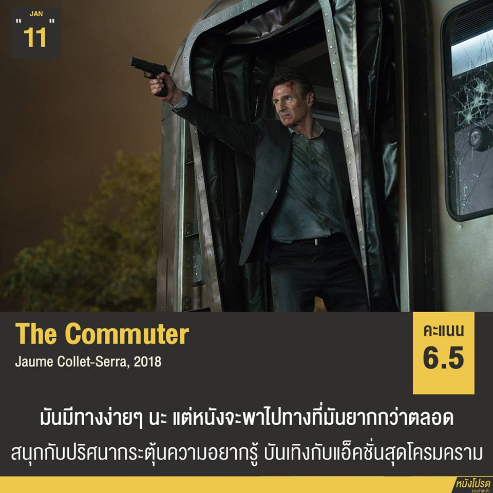

มันมีทางเลือกง่าย ๆ ตลอดนะ แต่หนังดันไปเลือกทางยาก ๆ เสมอ ซึ่งถ้าเลือกทางง่ายก็คงไม่ได้เห็นลุงเลียม นีสันบู๊สินะ หนังทำได้ตามมาตรฐานงานของผู้กำกับโจเม่ คอลเลต เซอร์ร่า คือกลาง ๆ ดูเอาบันเทิงอย่างเดียวพอ ส่วนตัวเราชอบกว่า Non-Stop ไม่เอื่อยแบบ The Shallows แล้วก็เฉลยแล้วไม่ชวนหงุดหงิดแบบ Unknown จุดดีของหนังคือการเล่าจากสายตาพระเอกเป็นหลัก
. 'ไมเคิล' (Liam Neeson) อดีตตำรวจที่กลายมาเป็นคนขายประกันในวัย 60 ปี ในช่วงที่เขามีภาระค่าใช้จ่ายครอบครัวเยอะมาก เขากลับถูกไล่ออกจากงานก่อนกำหนดถึง 5 ปี เขาปรับทุกข์กับเพื่อนเก่าว่าไม่กล้าบอกความจริงต่อภรรยา และในระหว่างทางกลับบ้านนั้นเขาก็ได้รับข้อเสนอจาก 'โจแอนนา' (Vera Farmiga) หญิงสาวแปลกหน้าที่เข้ามายื่นเงิน 1 แสนเหรียญให้เขาแลกกับการตามหาคน ๆ หนึ่งบนรถไฟขบวนนี้